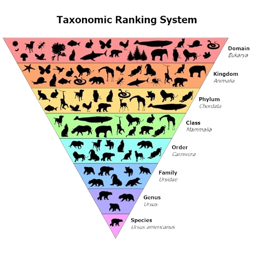

☰
Home
Classification
Tutorial
Tools
Care
Identify
Contribute
Enquiry
Welcome to the Tutorial
Your guide to understanding on how to transfer a fresh leaf into herbarium specimens
What is Herbarium Specimens?
According to
Website Name
, here is what a Herbarium Specimen:

Image of Taxonomy. From
Vrouge.co
.
How do can I create my own Herbarium Specimen?
First prepare the tools required:
There's a list of tools required
First prepare the tools required:
There's a list of tools required